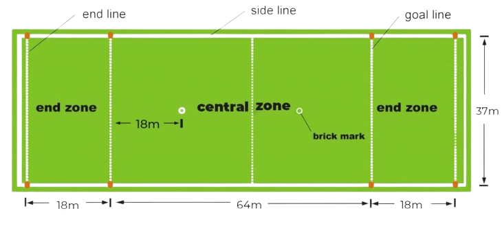
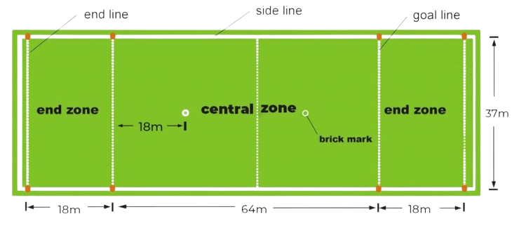

Rules for Ultimate Frisbee in 10 simple rules

1. The Field: A rectangular shape with end zones at each end. A regulation field is 70 yards long by 40 yards wide, with end zones 20 yards deep.
2. Starting Play: Each point begins with both teams lining up on the front of opposite end zone lines. The defense throws (“pulls”) the disc to the offense. A regulation game has seven players per team.
3. Scoring: Each time the offense catches a pass in the defense’s end zone, the offense scores a point. The teams switch direction after every goal, and the next point begins with a new pull by the team that just scored.
4. Movement of the Disc: The disc may be advanced in any direction by completing a pass to a teammate. Players may not run with the disc. The person with the disc (“thrower”) has ten seconds to throw the disc. The defender guarding the thrower (“marker”) counts out the stall count.
5. Change of Possession: When a pass is not completed (e.g. out of bounds, drop, block, interception, stalled), the defense immediately takes possession of the disc and becomes the offense.
6. Substitutions: Players not in the game may replace players in the game after a score and during an injury timeout.
7. Non-Contact: Players must attempt to avoid physical contact during play. Picks and screens are also prohibited.
8. Fouls: When a player initiates contact that affects the play, a foul occurs. When a foul causes a player to lose possession, the play resumes as if the possession was retained. If the player that the foul was called against disagrees with the foul call, the play is redone.
9. Self-Officiating: Players are responsible for their own foul and line calls. Players resolve their own disputes.
10. Spirit of the Game: The foundation of the rules in ultimate is Spirit of the Game, which places the responsibility for fair play on the player. Competitive play is encouraged, but never at the expense of respect between players, adherence to the rules, and the basic joy of play.
The professional playing standard can be found here
Official Rules of Ultiamate
Source for the 10 simple rules:
Ultimate in 10 Simple Rules

